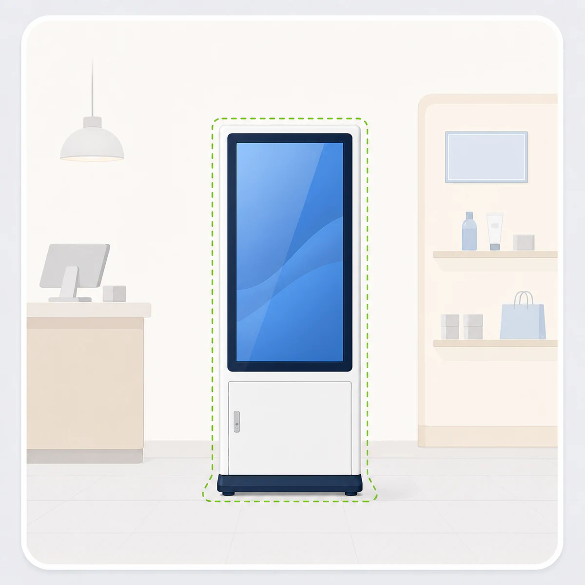

사진 위에서 한 손가락 이동, 두 손가락 확대/회전
AR PRODUCT PLACEMENT
제품 미리보기
키오스크 제품을 실제 공간 또는 사진 위에 올려 크기와 배치를 빠르게 확인하세요.

AR 시작
사진 불러오기 / 3D 배치
권장 환경: Android Chrome / ARCore 지원 기기
화면 접기
제품 선택
모델 준비
실측 고정
스케일
100%
치수 표시
📍 배치
저장
↶ 취소
↷ 복구
🗑️ 전체삭제
기준 길이 설정
기준점이 설정되지 않았습니다.
열기
기준 물체는 제품 설치 위치와 같은 평면에서 선택해 주세요.
문 210cm
A4 29.7cm
타일 60cm
책상 72cm
두 점 선택
다시 선택
실제 길이
cm
mm
기준 적용
초기화
화면 길이: -
환산값: -
제품 높이: -
미세 보정
100%
자동 계산값으로 되돌리기
선택된 제품 없음
조작
▲
◀
▶
▼
⟲ 회전
회전 ⟳
↑ 위로 기울임
↓ 아래로 기울임
높이 -
높이 +
캡처: 휴대폰 전원 버튼 + 볼륨 아래 버튼
모델 불러오는 중...